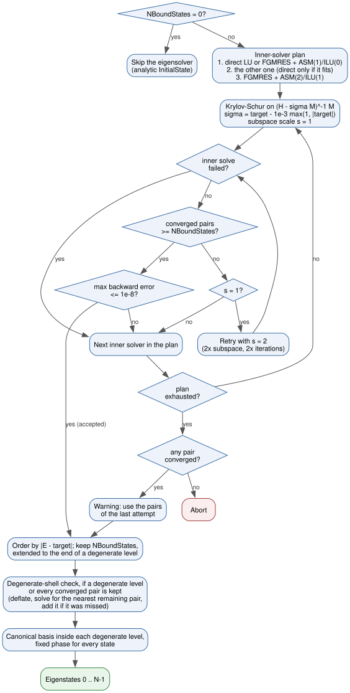

Eigensolver
Before the propagation TDSE-Z computes bound states of the field-free Hamiltonian \(H_0\) (Eq. (22)). In the spline basis this is the generalised Hermitian eigenproblem
with \(M\) the overlap matrix (Eq. (23)). The
absorbing potential is not part of \(H_0\); it is added only for the
propagation (Physics Conventions). The eigenpairs are used as initial
states (Initial State), for populations and current decomposition
(Observables) and are written to static/EigenData_<input>.h5
(HDF5 Output Schema).
Keys
Key |
Type |
Default |
Description |
|---|---|---|---|
NBoundStates / NumberOfBoundStates |
int |
|
Number of eigenpairs to compute, stored as states \(0 \ldots N-1\).
If the last requested state belongs to a degenerate level, the whole
level is kept (with a printed note). |
TargetEigenvalue / TargetEnergy |
real |
|
Target energy \(\tau\) in Hartree. The eigenvalues nearest to \(\tau\) are computed. |
UseDirectSolve / DirectSolve |
bool |
|
Start with the direct inner solver (when a direct solver package is
available), as |
NBoundStatesSave / SaveBoundStates |
bool |
|
Also write the eigenvectors to |
BoundStateFormat / StateFormat / SaveStateFormat |
string |
|
Format of the saved eigenvectors: |
The states returned are the \(N\) eigenvalues closest to the target, not
necessarily the lowest ones. To obtain the ground state and the lowest
excited states, set TargetEigenvalue at or slightly below the expected
ground-state energy (for example -0.8 for a soft-core atom with
\(E_0 = -0.67\)). The command-line options that control the eigensolver
are listed in CLI Flags.
Shift-Invert Krylov-Schur
The eigenproblem Eq. (32) is solved with the Krylov-Schur
method [Stewart2002] of SLEPc [Hernandez2005] (EPSKRYLOVSCHUR, problem
type EPS_GHEP) applied to the shift-and-invert operator
whose largest \(|\theta|\) belong to the eigenvalues \(E\) nearest the shift. The shift lies slightly below the target so that a target placed exactly on an eigenvalue does not make \(H_0 - \sigma M\) singular; the selection of the eigenvalues nearest to \(\tau\) is unaffected. The outer tolerance is \(10^{-12}\) with at most 2000 restarts; the subspace dimensions are chosen from \(N\) and the problem size.
Inner solvers
Each application of Eq. (33) solves a linear system with the indefinite matrix \(H_0 - \sigma M\). Three inner solvers are available:
Direct: LU factorisation, computed once. MUMPS when PETSc provides it (with 50 % extra workspace unless
-st_mat_mumps_icntl_14is set), otherwise SuperLU_DIST, otherwise PETSc’s own LU on a single rank; for GPU matrices cuSPARSE on a single rank.Iterative: FGMRES [Saad1986] (restart 100, or 50 above \(10^6\) DOFs; relative tolerance \(10^{-10}\); at most 500 iterations) preconditioned by restricted additive Schwarz [CaiSarkis1999] with overlap 1 and ILU(0) on each block. The block factorisations use in-block shifts against the zero pivots of the indefinite matrix.
Iterative, strong: as above with overlap 2, ILU(1) and at most 3000 iterations.
The first inner solver is chosen as follows:
-tdsez_eps_inner directorUseDirectSolve = 1: direct (iterative if no direct package is available).-tdsez_eps_inner iterative: iterative.Otherwise direct when the factorisation fits, that is in 1D and 2D up to \(2\times 10^6\) DOFs, and in 3D for spline degree \(\ge 6\) up to 30 000 DOFs, where the overlapping Schwarz blocks would cover most of the domain. All other cases start with the iterative solver.
The remaining entries of the plan follow: after a direct start the iterative
and then the strong iterative solver; after an iterative start the direct
solver (if it fits: 1D and 2D up to \(2\times 10^6\) DOFs, 3D up to
\(3\times 10^5\) DOFs) and then the strong iterative solver. The options
-st_ksp_*, -st_pc_* and -st_sub_pc_* are applied on top of these
defaults, and -eps_* options on top of the eigensolver settings.
Acceptance of an attempt
Each attempt is accepted only if the inner solves succeed, at least
NBoundStates pairs converge, and the backward error of every requested
pair,
satisfies \(\eta \le 10^{-8}\). Unlike the relative residual \(\|r\|/(|E|\,\|\mathbf c\|)\), \(\eta\) stays meaningful for \(E \to 0\), for example for the constant ground state of a free particle with Neumann walls. Fig. 6 shows the complete sequence:
An inner-solve failure or a backward error above \(10^{-8}\) moves to the next inner solver.
Too few converged pairs repeat the attempt once with twice the subspace dimensions and iteration limit, then move to the next inner solver.
When no inner solver meets every check, the converged pairs of the last attempt are used with a warning; the run stops only when no pair has converged.


Fig. 6 Control flow of the eigensolver: inner-solver plan, per-attempt checks with the subspace retry, and the construction of the canonical eigenstates.
The printed residual of each state (res) and the dataset
run_metadata/eig_residual in EigenData_<input>.h5 contain
\(\eta\) of Eq. (34) for the final states.
Degenerate Levels and Reproducible States
Inside a degenerate level any orthonormal basis is an eigenbasis, and the one SLEPc returns depends on rounding (assembly order, MPI layout, BLAS); the global phase of each eigenvector is arbitrary as well. Per-state populations, currents, saved wavefunctions and superposition initial states would then change from run to run. TDSE-Z therefore post-processes the converged pairs. Two eigenvalues belong to the same level when
with \(\varepsilon_{\mathrm{deg}}\) set by -tdsez_degeneracy_tol
(default \(10^{-9}\)).
Selection. The pairs are ordered by their distance to the target (ties by energy). The first
NBoundStatesare kept, extended to the end of a degenerate level.Degenerate-shell check. Krylov solvers can miss copies of a repeated eigenvalue. Whenever the kept set contains a degenerate level, or ends at the last converged pair, the kept states are deflated and SLEPc is asked for the nearest remaining pair (at a loose tolerance). If that pair is not farther from the target than the last kept state, or has the energy of a kept level, it was missed: it is recomputed at the full tolerance, added, and the check repeats (
Degenerate-shell check: added ...). Each check costs about one extra eigensolve.Canonical basis. Inside each degenerate level the states are \(M\)-orthonormalised and rotated to diagonalise a fixed position weight (a generic quadratic polynomial of the coordinates at the Greville points), sorted by that weight. The spanned subspace is unchanged; all states of the level are assigned the mean energy of the level. A warning is printed if the weight does not separate the states of a level.
Phase. The global phase of each state is chosen so that \(\mathbf c^{T} M\,\mathbf c\) is real and positive (which makes the coefficient vector of a nondegenerate state real), and the sign so that the overlap \(\int w\,\psi\,d\mathbf r\) with \(w = \prod_d (1 + 0.3\,\hat x_d)\) is positive, where \(\hat x_d\) is the coordinate scaled to \([-1, 1]\). When that overlap vanishes, \(w = \prod_d e^{a_d \hat x_d}\) with \(a = (0.37, 0.53, 0.71)\) is used instead.
The resulting states, and everything computed from them, agree across assembly paths and MPI rank counts to rounding.
Saved eigenstates
When NBoundStates > 0, static/EigenData_<input>.h5 is always written
with the spectrum and the run metadata, including \(\eta\) of each state.
NBoundStatesSave = 1 adds, for each kept state \(i\), the vector
psi_<i> in the PetIGA layout and coeff_<i> in natural ordering
(HDF5 Output Schema). BoundStateFormat selects their form:
complex: the canonical eigenvectors described above.real: each state is rotated by the phase of one of its nonzero coefficients, its real part is kept and renormalised to \(\|\psi\|_M = 1\). For a nondegenerate state this coincides with the canonical eigenvector up to sign.